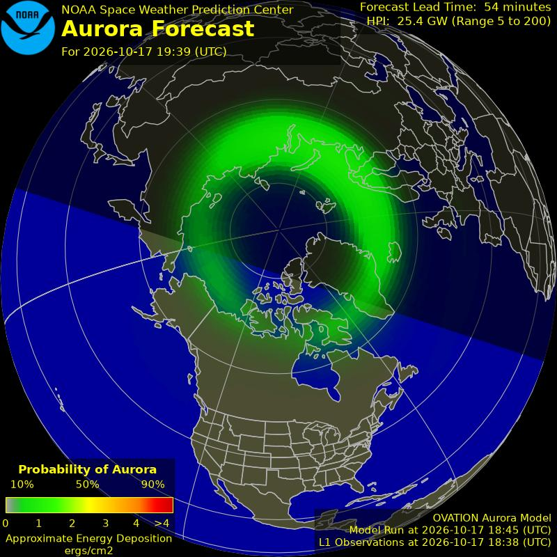

🗺️ National products
🌌 Aurora & space weather (NOAA SWPC)

🌧️ WPC charts

🗣️ WPC forecast discussions
📝 Short Range (Days 1-2)
...Well below average temperatures spread across much of central, southern and eastern U.S. with widespread frost and freezing temperatures from the Plains to the East through the weekend...
...Nor'easter develops along the Carolina coast this weekend, bringing potential coastal flooding and beach erosion along portions of the Mid-Atlantic coast into early next week...
...Elevated to Critical fire weather across portions of California into Sunday...
The strong surface low over southeastern Canada will continue to move northeastward, as the strong cold front moves offshore, allowing a colder and drier airmass to spread southeastward behind the boundary. Across the Great Lakes and higher elevations of the Northeast, lingering cyclonic flow and colder air aloft will support mixed precipiation through early Saturday morning. Furthermore, the slow-moving trailing cold front will continue to move southeastward across Florida through early Sunday, bringing showers and thunderstorms across the area. As the boundary interacts with unstable moist air, rainfall rates may increase, leading to excessive rainfall/localized flooding across portions of southeastern Florida coast through Sunday.
Meanwhile, the development of a non-tropical coastal low near the Carolina coast will bring unsettled weather along portions of the Mid-Atlantic coastline through the weekend into Monday. Strengthening onshore flow north of the low will bring periods of heavy rain, gusty winds, and hazardous marine conditions to portions of the coastal Carolinas and Mid-Atlantic. The greatest coastal impacts and heavy rainfall will depend on the storms track, intensity, and proximity to the shoreline. Persistent onshore winds and elevated wave heights could contribute to coastal flooding, beach erosion, and hazardous surf.
Across the West, the most notable concerns will remain concentrated over southern and interior California, where strong offshore flow associated with an enhanced surface pressure gradient will favor Santa Ana wind conditions. The combination of low humidity and locally strong wind gusts will support elevated to critical fire weather conditions through Sunday, particularly across wind-prone passes, foothills, and adjacent inland valleys. Elsewhere across western U.S., a frontal disturbance approaching the Pacific Northwest may produce periods of light showers through early Saturday, especially across coastal areas and the northern Cascades. Additional isolated showers may develop across portions of the Southwest in association with lingering shortwave disturbances through Monday.
A strong surface high pressure will build southeastward behind the cold front, bringing significant cooler temperatures across central, southern, and eastern U.S. Highs will drop 15-25 degrees below normal across the Southern Plains into the Mid-Atlantic/Ohio Valley and Northeast. Widespread Freeze Warnings and Frost Advisories are in effect for portions of the Plains into the Midwest, Great Lakes, Ohio Valley/Mid-Atlantic through Sunday.
🌧️ Excessive Rainfall - Days 1-2
Day 1
Diurnal instability in a pre-frontal airmass of 2.2" PW (2 standard deviations above normal) with light mean layer flow will allow development of repeating heavy thunderstorms this afternoon over the far southeast Florida peninsula. The approaching cold front will then promote further activity this evening into the overnight. Rain rates of 2 to 3 inch per hour are likely with scattered coverage of 2 to 6 inches with isolated 8 inches or more possible through tonight. The Slight Risk is maintained for the metropolitan area from Port St Lucie down through Miami.
Jackson
Day 2 Valid 12Z Sun Oct 18 2026 - 12Z Mon Oct 19 2026
..MARGINAL RISKS OF EXCESSIVE RAINFALL EXIST FOR SOUTH FLORIDA AND THE OUTER BANKS OF NORTH CAROLINA SUNDAY...
North Carolina Outer Banks... There will be increasing chances for heavy rainfall along the North Carolina as a Nor'easter develops off-shore. The 00Z guidance tended more off-shore than the previous runs but the magnitude of the east-west spread in the placement of the low suggests maintaining the Marginal Risk is prudent.
South Florida... A well defined cold front is expected to press southward before stalling south of Florida late tomorrow night or early Monday morning. Showers and thunderstorms capable of producing downpour will be focused in vicinity of the front...especially in the afternoon and evening where moisture flux convergence is maximized by moderate post- frontal on- shore flow. Three+ inch amounts are locally possible along the coast but there is more guidance indicating the heaviest rainfall will be off-shore. A Marginal Risk still is sufficient given the low-end confidence of rainfall placement,
Bann
🌧️ Excessive Rainfall - Day 3
Day 3
Numerical guidance continues ti show an area of low pressure offshore, there has been high run to run variability in the east- to-west placement of the low and its associated rainfall. That will dictate whether heavy rain makes it onshore or not. The 17/00Z GFS inched closer to the Outer Banks while the 17/00Z ECMWF headed farther out to sea showing the predictability of this system improved little. The 17/00Z ECMWF AIFS and 17/00Z AIGFS remained supportive of their control/operational runs respectively. As a result...the Marginal Risk remained largely unchanged from continuity.
Bann
Day 3 threat area: www.wpc.ncep.noaa.gov/qpf/99epoints.txt
🌧️ Excessive Rainfall - Days 4-5
Day 4 and Day 5
...Southwest... For Tuesday/Tuesday night, the Southwest is on the eastern periphery of a deep layer cyclone/"outside slider" moving west of CA. The atmosphere still doesn't appear to be sufficiently saturated with 0.75-1" precipitable water values in an environment with mild 1000-500 hPa thickness values. MU CAPE also appears skimpy, with only small pockets of 250 J/kg forecast by the 00z GFS. Continue not to carry a Marginal Risk since guidance is maintaining serve over its past day of runs.
The situation changes markedly on Wednesday/Wednesday night, as the deep layer cyclone approaches SoCal and scoops up moisture from a dying Trudy and flings it into the Southwest. Near the cold low itself, MU CAPE of 250-500 J/kg and precipitable water values of 1-1.3" with up to 30 kts of onshore flow at 850 hPa is forecast. There's enough of a heavy rain signal for a Marginal Risk for the Transverse and Peninsular Ranges, which is there to help cover burn scar concerns. In and near the Four Corners, MU CAPE is forecast to rise above 1000 J/kg, precipitable water values of 0.75-1.25" are anticipated, and a few pieces of deterministic guidance are definitely wet enough for a Marginal Risk with local 3-5" totals. Hourly rain amounts to 2" would be possible across portions of AZ, NM, and the Four Corners. It is possible that this area could carry a greater risk as we move closer to this weather setup.
...Eastern NC/Southeast VA... The guidance advertises a Nor'easter whose center is offshore North Carolina, with an increasing signal for interior convection as -18C air at 500 hPa moves over 28-29C sea surface temperatures during the short range period and perhaps a convective comma head/TROWAL which feeds off additional instability from the western subtropical North Atlantic and tries to brush the NC coast. The guidance has almost completely trended away from heavy rainfall with the system Tuesday/Tuesday night, so removed the Marginal Risk. Wednesday/Wednesday night is a question mark, as the 00z Canadian guidance brings heavy rain back into eastern NC at that time range. As most other guidance has left heavy rainfall offshore, left any Marginal Risks out of the EROs for this system for days 4-5. There is a non-zero chance of excessive rainfall/ flash flooding should a solution like the 00z Canadian come to pass or the guidance tries to slosh/waver back westward in later runs. Stay tuned.
❄️ Heavy Snow & Icing
The probability of significant snow and ice across the CONUS is less than ten percent through Tuesday.
🛰️ WPC / OPC / SPC analysis charts - extended set
🎈 Upper-air analyses (SPC obswx)